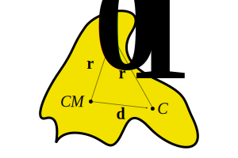

A Few Trivial Derivations

Here you will find derivations of a few physics equations we often take for granted.
\(g\) can easily be derived from Newton's law of universal gravitation:
$$F_g = G\frac{m_1m_2}{r^2}$$In our case, we have a mass \(m\) that acted upon by gravity close to the Earth's surface:
\begin{align} ma &= G\frac{m_\text{earth}m}{{r_\text{earth}}^2} \\ a &= G\frac{m_\text{earth}}{{r_\text{earth}}^2} \\ a &= \left(6.67 \times 10^{-11} \frac{\text{ m}^3}{\text{kg}\cdot\text{s}^{2}}\right)\frac{\left(5.97 \times 10^{24} \text{ kg}\right)}{\left(6.37 \times 10^6 \text{ m}\right)^2} \\ \end{align}Many students consider these equations for 1-D motion under constant acceleration to be some of the simplest in mechanics; equally many can never quite remember them. They are actually not difficult to memorize if one understands their origins in calculus, which will be our goal here.
For aesthetic purposes, when I write the function \(v\), I really mean \(v(t)\). Let's also agree that writing \(v_0\) is the same as writing \(v(0)\) and that \(t_0 = 0\).
Then, given a constant acceleration \(a\):
When \(t = 0\), \(v = c_1 = v_0\), so:
\(v = v_0 + at\)
When \(t = 0\), \(x = c_2 = x_0\), so:
\(x = x_0 + v_0t + \frac{1}{2}at^2\)
Eliminating \(t\) from the equations
Note that our equation for \(x\) can be rewritten like:
$$x - x_0 = v_0t + \frac{1}{2}at^2 = \Delta x$$If we square our equation for \(v\) and then factor, we find that:
\begin{align} v &= v_0 + at \\ v^2 &= {v_0}^2 + 2av_0t + a^2t^2 \\ &= {v_0}^2 + 2a(v_0t + \frac{1}{2}at^2) \\ \end{align}Notice that the stuff in the parentheses is our rewritten equation for \(x\)! Therefore:
By definition, we know the moment of inertia about the center of mass of an object is:
$$I_{\text{CM}} = \int dm{\boldsymbol{r_0}}^2$$But what if you wanted to rotate the object not about the center of mass, but some other point?
In high-school physics, you learn to apply the parallel axis theorem in such cases. Chances are, your teacher skipped the derivation. Even if you know the parallel axis theorem by heart, you may want to follow along to remind yourself why it is valid for not only generic, nice-looking mass distributions, but also weird-looking non-uniform mass distributions. To start, considering the following (arbitrarily shaped) object.
\(CM\) is the object's center of mass. Now, we wish to find the moment of inertia about a new point, \(C\). Let's indicate the distance between \(CM\) and \(C\) using the position vector \(\textbf{d}\).
Now consider a generic point—any point, really—on the object, and call it \(P\). If the distance from \(CM\) to \(P\) can be represented by the position vector \(\textbf{r}_0}\), then by vector geometry, the distance from the new center \(C\) to \(P\) is \(\boldsymbol{r_0} - \boldsymbol{d}\). This will hold true for each point \(P\) in the object.
So, from the definition of moment of inertia, we have:
\begin{align} I_C &= \int dm(\boldsymbol{r_0} - \boldsymbol{d})^2 \\ &= \int dm(\boldsymbol{r_0}^2 - 2\boldsymbol{r_0d} + \boldsymbol{d}^2) \\ &= \int dm\boldsymbol{r_0}^2 - \int 2\boldsymbol{r_0d}dm + \int dm\boldsymbol{d}^2 \\ \end{align}The first term in our expression is simply the moment of inertia about the center of mass: \(I_{CM} = \int dm\boldsymbol{r}^2\)! ✓
Since the center of mass is like a weighted average of the positions of all the small mass elements (\(dm\)), adding together all the \(dmr_0\)s should equal zero (remember, we are dealing with vectors, and there are little \(dm\)s on all sides of the \(CM\). Thus, the second term disappears. ✓
In the third term, summing all the \(dm\)s returns the total mass of the object. ✓
Since our rod is uniform, its mass-length ("linear") density is the same at every point along its length: \(\lambda = \frac ML\). Using this info, we can find the mass element \(dm\) of every small length of rod \(dr\):
$$dm = \lambda dr = \frac{M}{L}dr$$It's just integration from there. We are finding the moment of inertia about the rod's center, so half the rod lies in the positive direction and half the rod lies in the negative direction. Thus:
\begin{align} I &= \int dmr^2 \\ &= \int_{-L/2}^{L/2} \frac{M}{L}dr r^2 \\ &= \frac{M}{L}\left(\left.\frac{r^3}{3}\right|_{-L/2}^{L/2}\right) \\\ \end{align}A disk is like a slice of onion—a bunch of concentric rings placed neatly together. For each of these rings, if \(r\) is the radius, then the circumference is \(2\pi r\) and the area \(dA\) is \(2\pi rdr\) (remember, we are dealing with rings, not circles).
$$I = \int dmr^2$$We need to find \(dm\). If the entire disk has uniform mass \(M\) and radius \(R\), its area density, or how much mass is "spread" across a given area, is:
$$\rho = \frac MA = \frac{M}{\pi R^2}$$Meaning each of our concentric rings has mass:
$$dm = \rho dA = \frac{M}{\pi R^2}2\pi rdr = \frac{2Mrdr}{R^2}$$Now we substitute \(dm\) into our equation for \(I\) and integrate from the smallest ring (\(r = 0\)) to the largest (\(r = R\)):
\begin{align} I &= \int_0^R \frac{2M}{R^2}r^3dr \\ &= \frac{2M}{R^2}\left(\left.\frac{r^4}{4}\right|_0^R\right) \\ \end{align}Imagine a spherical watermelon of radius \(R\) and uniform mass \(M\) centered at the origin. Cut it into thin circular slices—each resembles a thin disk! This suggests that we can use the moment of inertia of a disk about an axis through its center, \(I = \frac{1}{2}mr^2\), to find the watermelon's moment of inertia:
$$I = \int_{-R}^{R} \frac{1}{2}dmr^2$$First, the radius \(r\) of each slice depends on the position of the slice along the \(x\)-axis. From triangle geometry, we see that:
$$x^2 + r^2 = R^2$$ $$r = \sqrt{R^2 - x^2}$$Next, let's find \(dm\). Actually, the mass of each infinitesimal piece of watermelon is dependent on the volume \(dV\) . . . which is dependent on the area \(dA\) . . . which is dependent on the radius \(r\) . . . which is dependent on \(x\)!
We need the volumetric mass density of the watermelon, or how much mass is spread throughout a given volume. Since our watermelon is uniform, the density at any space within it is \(\rho = \frac{M}{\frac{4}{3}\pi R^3} = \frac{3M}{4\pi R^3}\).
Now, for some quick substitutions:
\begin{align} dm &= \rho dV \\ &= \rho(dAdx) \\ &= \rho\left(\pi r^2dx\right) \\ &= \rho\left(\pi \left(\sqrt{R^2 - x^2}\right)^2dx\right) \\ &= \left(\frac{3M}{4 R^3}\right)\left(R^2 - x^2\right)dx \\ \end{align}At last, we can integrate from \(x = -R\) (one end of the watermelon) to \(x = R\) (the other end)!
\begin{align} I &= \int_{-R}^{R}\frac{1}{2}dmr^2 \\ &= \int_{-R}^{R}\frac{1}{2}\left[\left(\frac{3M}{4 R^3}\right)\left(R^2 - x^2\right)dx\right] \left(R^2 - x^2\right) \\ &= \frac{3M}{8R^3} \int_{-R}^{R} (R^2 - x^2)^2dx \\ \end{align}Expanding the stuff in the integral, we have:
\begin{align} &= \frac{3M}{8R^3} \left(\int_{-R}^{R}R^4dx - \int_{-R}^{R}2R^2x^2dx + \int_{-R}^{R}x^4dx\right) \\ &= \frac{3M}{8R^3} \left(R^4\left(\left.x\right|_{-R}^{R}\right) - 2R^2\left(\left.\frac{x^3}{3}\right|_{-R}^{R}\right) + \left.\frac{x^5}{5}\right|_{-R}^{R}\right) \\ \end{align}Given two masses—\(m\) and \(M\) with initial velocities \(v_0\) and \(V_0\), respectively—we have from conservation of momentum and energy:
$$mv_0 + MV_0 = mv + MV$$ $$\frac{1}{2}m{v_0}^2 + \frac{1}{2}M{V_0}^2 = \frac{1}{2}mv^2 + \frac{1}{2}MV^2$$Rearranging the first equation, we find:
$$\frac{m}{M} = \frac{V - V_0}{v_0 - v}$$Simplifying and rearranging the second euqation in the same manner, we find:
$$\frac{m}{M} = \frac{V^2 - {V_0}^2}{{v_0}^2 - v^2}$$Setting the two equal, we have:
$$\frac{V - V_0}{v_0 - v} = \frac{V^2 - {V_0}^2}{{v_0}^2 - v^2}$$Recognizing that \(a^2 - b^2 = (a + b)(a - b)\):
\begin{align} \frac{V - V_0}{v_0 - v} &= \frac{(V + V_0)(V - V_0)}{(v_0 + v)(v_0 - v)} \\ v_0 + v &= V_0 + V \\ \end{align}Hence the difference between the initial velocities, a.k.a. the initial relative velocity, is equal in magnitude but opposite in direction to the final relative velocity.
A useful trick that can be applied in many derivations is small-angle approximation. It is easiest for sine:
$$\sin\theta = \frac{h}{r}$$From geometry, we can see that the arc length swept by \(\theta\) is only slightly longer than \(h\). If \(\theta\) is very small, they will be almost exactly the same. Substituting \(s\) in place of \(h\) leads us to . . . wait! \(\frac{s}{r}\) is just the definition of an angle in radians! So:
$$\sin\theta = \frac{h}{r} \approx \frac{s}{r} = \theta$$We can get a better sense of how valid this approximiation is by finding the percent error.
$$\text{% error} = \frac{\theta - \sin\theta}{\sin\theta} \times 100$$ $$= 1 \text{ if }\theta = 0.244$$So we won't even be one percent off as long as our angle is less than 0.244 radians, or 14 degrees!
There are several ways to derive the corresponding approximiation for cosine (involving various expansions, Taylor series), but one method that leads to the same results involves using our result for sine. Recalling that:
\begin{align} \cos(2\theta) &= \cos^2\theta - \sin^2\theta \\ \cos\theta &= \cos^2\left(\frac \theta 2\right) - \sin^2\left(\frac \theta 2\right) \\ &= 1 - 2\sin^2\frac \theta 2 \\ &\approx 1 - 2\left(\frac \theta 2\right)^2\\ \end{align}Frequency is how many cycles something completes in a unit of time (in SI units, \(\frac{1}{\text{s}}\), or \(\text{hz}\)).
Angular frequency is an extension of this concept: it is the angle something covers in a given unit of time. "Covers" can mean the angle swept by a rotating object or the "percent completion" of a periodic function, like a sine wave, in the middle of a cycle. More precisely, it can be written as \(\frac{2\pi}{T}\), where \(T\) is the period of the motion. For circles, \(2\pi\) is one complete revolution (kind of like a cycle). For periodic functions, it is the time the function spends doing something before it repeats itself.
We know that an object in simple harmonic motion, like one on the end of a spring, oscillates. Its position can be represented by a sinusoidal function, meaning it is periodic and thus has angular frequency.
To derive the angular frequency of an object in SHS, we first have to recognize that an object attached to a spring experiences a force \(F = -kx\), for the spring force is always in the direction opposite to the object's displacement relative to its equilibrium position.
We know that smart people have solved the second-order differential equations to find that an object in SHS's position can be modeled by an equation of the form:
$$x = B\sin(\omega t) + A\cos(\omega t)$$The unknowns in this equation depend on the initial conditions of the system. Let's construct our coordinate system such that the equilibrium position is at the origin. Let's also say that at \(t = 0\), we release the spring from a given amplitude \(A\), thus beginning its oscillation.
\(\sin0 = 0\), which simplifies things nicely. From differentiation:
\begin{align} x &= A\cos(\omega t) \\ v &= -A\omega\sin (\omega t) \\ a &= -A\omega^2 \cos(\omega t) \\ \end{align}Now that we have expressions for \(x\) and \(a\) in terms of \(t\), we can substitute these into our original force equation and discover new relationships.
$$m(-B\omega^2 \cos(\omega t)) = -k(B\cos(\omega t))$$So the angular frequency of an object oscillating at the end of a spring is dependent solely on the spring constant \(k\) and its own mass \(m\), not the amplitude.